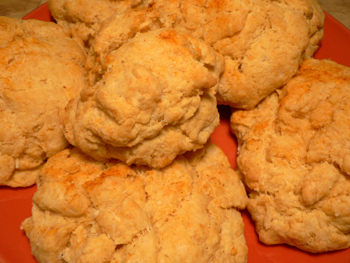

Martha Stewart's spicy cheese biscuits
I’ve had nothing but success so far with Martha’s Baking Handbook. Last weekend was the smoked paprika–cheese biscuits, which I served with Mom’s perfect paprika chicken. Mine look crazy, but no crazier than Martha’s, and they were my first biscuits, so please be nice:

Martha suggests leaving off the sprinkling of paprika on top of the biscuits if you can’t handle spicy fare, which seems a bit strange since smoked paprika isn’t at all spicy, but nevermind that. If I make these again, I’ll cut down on the cheese a bit and turn up the paprika. But as they were, these are delicious treats, and even better on day two after a few minutes in the oven to warm through.
Spicy cheese biscuits (for 10 biscuits)
2 1/4 cups all-purpose flour
1 1/4 teaspoons baking powder
3/4 teaspoon baking soda
1 teaspoon salt
2 teaspoons sugar
3/4 teaspoon sweet smoked paprika
6 tablespoons cold butter, cut in pieces
6 ounces manchego cheese, finely grated
1 1/2 cups heavy cream
Preheat the oven to 375ºF. Whisk the flour, baking powder and soda, salt, sugar, and paprika in a large bowl. Cut in the butter until it resembles coarse meal with a few clumps remaining (I used the processor for this). Stir in the cheese.
Add the cream, and stir with a rubber spatula until it just comes together. Use a 1/2-cup measure to scoop mounds about 1 1/2 inches apart on a parchment-lined baking sheet. Dust with more paprika. Bake 15 to 20 minutes, rotating halfway through. (I baked about ten minutes longer than this).
Comments
i’ve got to try this out asap. whenever i make chili i have to have cheesy biscuits along. usually once i’ve made the chili i become bored of being in the kitchen, so i usually just sprinkle some cheese on top of the (gasp) pillbury premade kind and toss it in the oven.
but yknow, i could make these in advance and i bet they taste a hundred times better…thanks so much :)
What is Manchengo cheese? And is there anything I could substitute if I can’t get it? They look yummy.
Jeannie: you’d love these, and they’re super easy and fast. Get the sharpest manchego you can find.
Aunt Sue: manchego is a semi-firm sheep’s milk cheese, tangy and salty. I think you could sub in another firm cheese like cheddar or gruyère without any problem, but definitely use something sharp and tangy, or you probably won’t taste it.
I’m totally obsessed. This is pretty much the Fannie Farmer cream scone recipe. Only she has you cut the biscuits into diamonds.
For me, what I love about this kind of recipe, as a one who does not self-identify as a baker, is that the flavors and uses you can bring to the dough, by varying sweet and savory additives, makes the whole process feel like cooking, not baking.
Manchego, oh, manchego.
I am using smokey – sweet chipotle seasoning instead of sweet smoked paprika. I got it from Homemade Gourmet and it’s FABULOUS!
Thanks for the recipe, I lent out my book and my daughter asked for the biscuits for Christmas Breakfast, you have rescued me. Happy Holidays! They also taste yummy with bit of garlic in them.
I need to know where I can find this cheese. I got this book and this recipe POPPED at me. Can I use Feta Cheese? HELP!
Add a comment